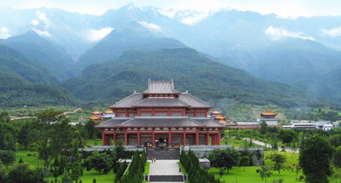
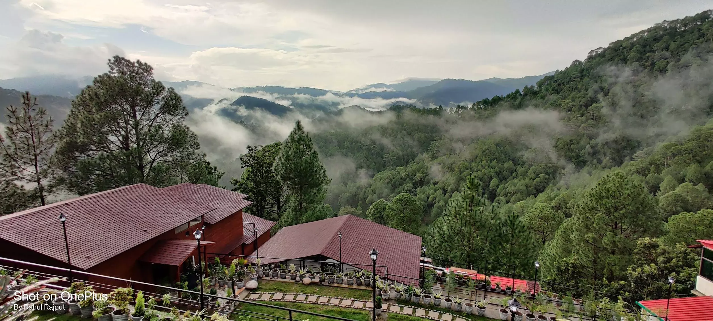

Featured Photos




Lansdowne, situated amidst the lush greenery of the Pauri Garhwal district in Uttarakhand, is a serene hill station known for its pristine beauty and tranquility. Named after Lord Lansdowne, the then Viceroy of India, Lansdowne was established as a military garrison town by the British in the late 19th century. Today, Lansdowne retains its old-world charm with its colonial-era buildings, churches, and quiet streets. The town offers breathtaking views of the surrounding Himalayan peaks, including Trishul, Chaukhamba, and Bandarpunch. Lansdowne is an ideal destination for nature lovers, adventure enthusiasts, and those seeking solitude away from the chaos of city life. Visitors can explore the tranquil surroundings, take leisurely walks amidst the pine and oak forests, or enjoy birdwatching and nature photography. The town also boasts historical attractions such as the Garhwali Museum, which showcases the culture and heritage of the Garhwal region, and the War Memorial, commemorating the soldiers of the Garhwal Rifles. With its salubrious climate, picturesque landscapes, and serene ambiance, Lansdowne offers a rejuvenating retreat for travelers seeking solace amidst nature.